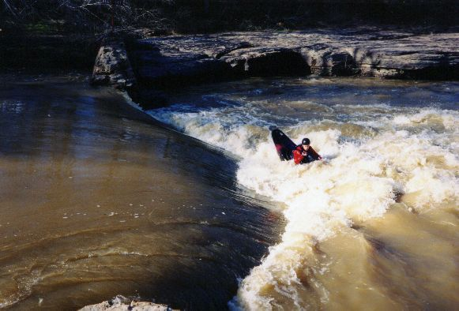
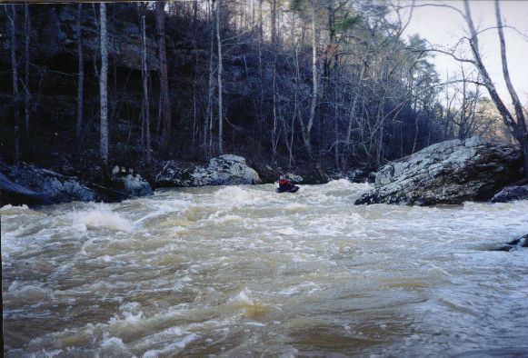
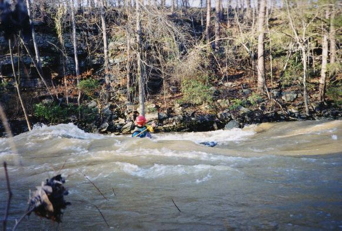
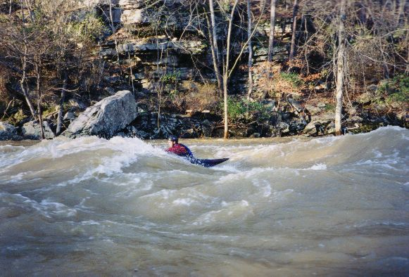

|  | Fred Westrom prepares to insert an end into the put-in old mill dam play hole at big water. |
|  | Towards the bottom. maybe there are rocks here at normal water. |
|  | Just above the take-out, there are at least three very cool surfing waves at high water. |
|  | Fred back surfs one of the big waves at the bottom. He later called it "one of the best days surfing ever". |